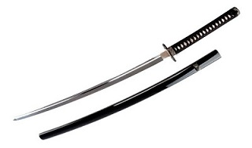

Katana
Entre as espadas japonesas, a mais famosa do mundo é provavelmente a katana, a arma preferida dos samurais.
Uma katana é um sabre curvo com uma lâmina bastante longa (mais de 60 cm) e fina e com uma única aresta. Era
usada deslizando pela cintura, cortando-a.
A katana é uma das armas japonesas mais conhecidas.
Usamos katanas para várias situações: arma de tamanho (usada por sua nitidez), arma de empuxo (usada por sua
ponta) ou arma cerimonial (simbólica). Durante o período Muromachi, sua produção foi a mais importante e
muitos ferreiros famosos ficaram conhecidos por suas lendárias katanas.
Existe um vocabulário inteiro em torno da katana: Entre os guerreiros mais famosos, você pode reconhecer os
nomes de Masamune, Kotetsu, Kunimitsu ou Muramasa. Além disso, a katana é uma arma presente em muitas obras
contemporâneas, ligadas ao folclore japonês, como em Kill Bill, Ruroni Kenshin ou The Legend of Musashi!
